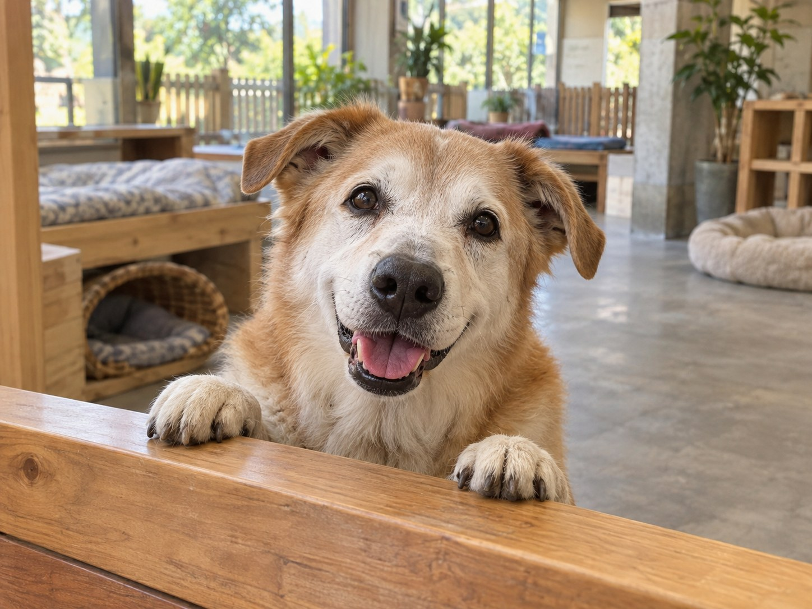
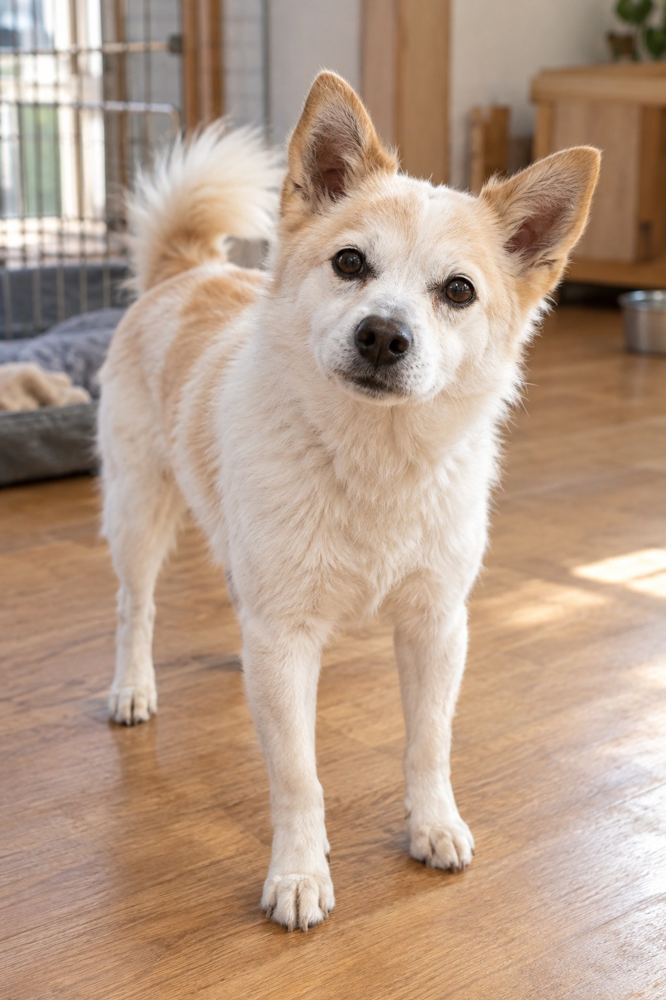
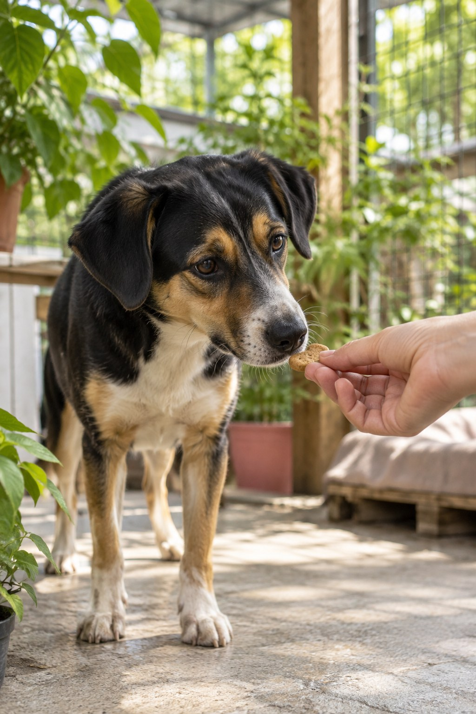
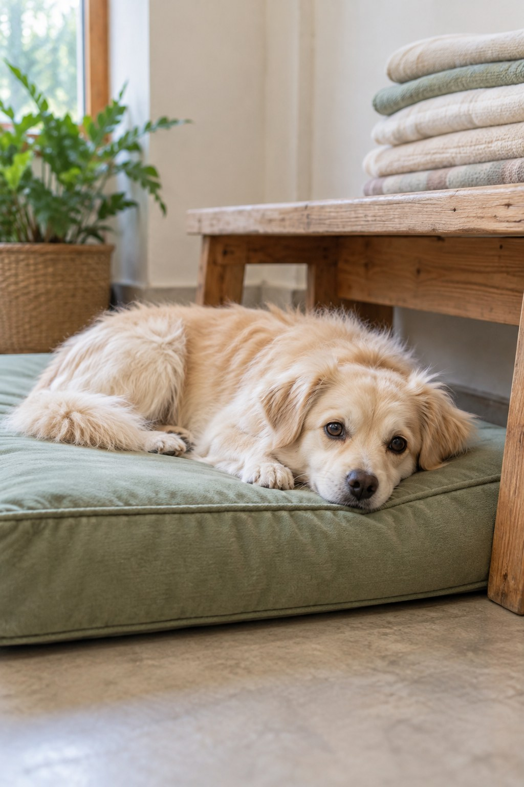
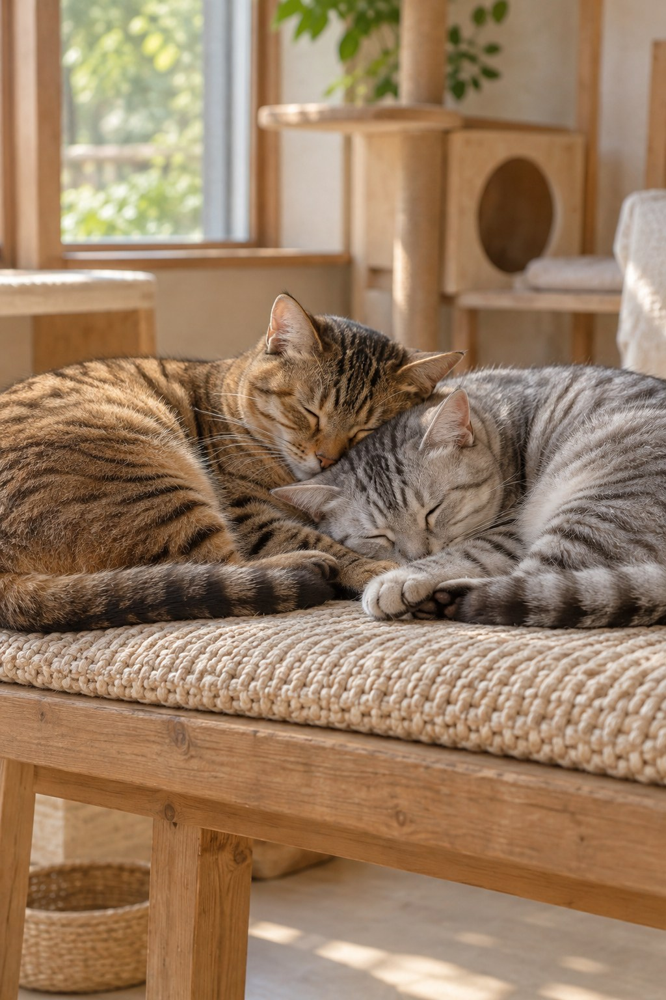

找到你的幫助方式
不用一次做很多，從你能做到的一小件事開始。無論是參與志工、提供合用的物資，或分享浪浪的生活故事，每一份關心都能成為照護現場的支持。先了解目前的需要，再選擇適合自己的參與方式，讓善意持續陪伴牠們。


讓支持成為日常
01.穩定餐食，照顧基本需要
飼料與主食是每天的照顧基礎。準備前先確認品牌、規格、保存期限與飲食需求，讓每份物資都能合用。
02.清潔環境，維持安心生活
清潔用品與日常耗材，都是維持生活環境的一部分。寄送前先詢問現場可使用的種類及包裝方式。
03.耐心陪伴，慢慢建立信任
依照照護者的引導，協助備餐、環境整理與陪伴。尊重毛孩的個性與步調，讓牠們自在地靠近。
04.持續參與，把善意接力下去
從自己的能力與時間出發，找到能長久投入的方式。分享日常故事，也能讓更多人看見浪浪的需要。
你的參與，可以有很多種樣子
先了解照護現場的需要，再選擇適合自己的方式。參與前請先聯繫，確認工作內容、物資規格或探訪安排，讓每一份心意都送到真正需要的地方。

成為陪伴的志工
先了解現場工作與參與時段

提供合用的物資
寄送前先確認當期需求

為牠們多做一點
分享故事，讓關心持續發生
每一份小小的善意，都能讓浪浪的日常更好一點。
與我們聯絡 ↗